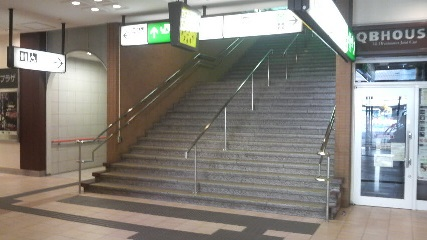
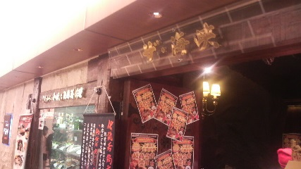

博麗神社例大祭 前日
2013/05/25
今年も例大祭の季節がやってきました。
はい、というわけで来る2013年5月26日(日)、東京国際展示場（東京ビッグサイト、コミケと同じあの逆三角錐の会場）で開かれた、
第10回博麗神社例大祭に参加してきました。 ちなみに去年ぶり2回目の一般参加です。
博麗神社例大祭とは年に一度開催される、東方Projectオンリーの同人誌即売会です。
東方Projectについてよく分からない人はこちらへ。
東方Projectの大ファンである自分としては行かない手はない、というわけで参加してました。
（以下は東方を知っている前提で書きます）
その道中や例大祭のようすを徒然なるままに書き綴っていこうと思います。
最後までおつきあいする必要は必ずしもありません。お帰りは、あちらです(みとり)
・
・
〜1由旬程↓〜
・
・
去年の第9回博麗神社例大祭は一人で一般参加した自分（そこぼっちとか言うな）ですが今年は旅のお供がいました。
同じ仙台から地方勢として初参加でサークル参加(!)するというkaz君です。
なんでも彼の友人のサークルが当選していて、売り子が足りないとのことで彼に手伝って欲しいとのこと。
初参加でサークル参加とはうらやまけしからん。
てなわけでまずは旅の出発点、仙台から新幹線で東京へ。
あ、ちなみにまだ2013年5月25日(土)なので例大祭の前日です。この日の目標は「関東入りすること」です。移動日です。

朝の仙台駅構内
まずは自分の中でのイベント前恒例行事、駅前の松屋で朝食に牛丼、を食べました。
今日はまだ前日なので張り切る必要はないんですがそれでも活力に。kaz君と共に食べ食べ。
そして予定よりすこし早いが、新幹線で東京へ。
in 新幹線 旅のお供のkaz君
ここで少しkaz君について。
kaz君は自分の大学での友人で、そこそこ長いつきあい。
音楽、特にギター系が趣味でバンドも組んでいるそうな。
今回のサークル参加からも分かるように広い人脈を持つ。ぼっちの自分とは性能(コミュ力)が違うのだよ！な彼です。嫁は妹紅。
そして着きました東京駅、今日の目標コンプリートです（ぇ
at 東京駅
何回も来てますがさすがに関東は人が多いですねー
仙台も地方都市ですがそれとは比べものにならないくらい。
さて、この日の目標もクリアしたので恒例の秋葉原探索と行きましょうか。
東京駅から山手線で秋葉原駅へ
俺らの聖地
というわけでここで秋葉原に詳しいmol君を召喚(kaz君の友人)し、3人でとりあえずお昼の腹ごしらえへ。

「ザ・海峡」
今回お邪魔したのはヨドバシ最上階にある「ザ・海峡」という・・・何屋？ってぐらいいろいろメニューが揃っているお店です。
ここは唐揚げが有名でなんかのコンテストで1位を取ったそうです（適当）。
唐揚げスキーな自分としては楽しみでした。
若鶏唐揚げランチ(\750)
唐揚げ
ふむふむたしかにやわらかくておいしい！ちょっと量があったけど大満足。
ところでどうしてこの手の唐揚げ専門店では唐揚げにつくレモンが一切れとか少ないんですかねえ。
唐揚げの肉自体に味がついているし、その味に自信があるからか調味料としてのレモンはあまりつけたくないんでしょうかね。
唐揚げにはレモン派（しかし居酒屋とかで勝手に他の人の分までレモンをかける奴はNG）
mol君と自分は初対面、いわゆる友人の友人。とはいえ同年代なので特に違和感なく話ができたと思う。
趣味は共通してるのが確定してる訳だしねー 彼も例大祭に一般参加するようで、栃木(?)からの参戦らしく関東圏の友人が同行してくれるのは心強い。
秋葉原にも詳しいらしいのでこの後は彼の案内で秋葉原探索へ。
・
・
・
秋葉原にも何回か来た事はあるけれど、ガイド付きは初。
メ□ブと虎の穴ぐらいしか場所が分からなくて、せっかく秋葉原行ってるのにあまり特色感がありませんでした。
が、彼はちょっと裏路地へ入り街中の同人ショップを巡り始めました。
一時期東方Projectの神主といざこざを起こした白いキャンバスへ行ったり、
秋葉になぜかいくつも店舗があるあ○ばお〜 へ行ったりして先行して東方同人グッズを漁りました。
何度も言うように本番は明日なのでそんなに多くは買いませんでしたが霊夢の扇子を買いました（白いキャンバスで1000円だったのがあ○ばお〜で300円でした）
同人ショップを3人でまわっていると道にかき氷・アイスクリーム屋が出ていました。
例年に比べてこの時期にしては暑いのでうまい商売だなーと思いました。
秋葉原の特性上いろいろコスプレショップもあって、友人達が「コスプレしないの？」と聞いてきました。
そりゃあコスプレには興味はあるけど今回はやりませんよ？ いくら自分が細身で似合いそうだと言われてもやるのは自分なんで勘弁してください（＾＾；
ゆーて背はあるから似合うかどうかは結構微妙やで？
まだまだ時間があったのでmol君の引き連れでジャンクパーツショップへ。
mol君もkaz君も音楽をやっているので、アンプとかエフェクタを自作するようです。音楽勢ぱねぇ( ﾟДﾟ)
自分もPC勢として自作とかに手を出すべきか、いまだBTOのPCで満足しているけれどもこういったジャンクパーツからPCを組み立てられる人には憧れちゃうなー。
・
・
・
さて、ここらで時間つぶしも完了。
そろそろ今日の宿へ向かいたいと思います。
kaz君とmol君とは宿が違うので秋葉原でいったんお別れ、ていうか自分が泊まる宿っていうのがまた友人宅なんだからですが。
お二人にはお世話になりました。まあまた例大祭の会場で会うんですが。
では今晩泊めてもらう友人宅がある池袋へゴー
秋葉原駅から山手線で池袋駅へ
at 池袋駅前西口
今回お世話になったのはG3君。
高校時代からのつきあいで、関東の大学へ進学した。
バイトや学校で急がしい中泊めてくれました、2泊も。
自分が行くとのことで必死に部屋を片付けしてくれたようです。
去年の夏コミの時に一回家を訪ねた（その時は荷物置きだけで中まで入ってなかった）んだけどはてさて。
自分は汚部屋なんて気にしないでーって言ったけど・・・うん、分かった、部屋が狭いんだな。さすが都会。
そして自分が座るところになぜか・・・
シリカちゃん(SAO) またの名をDEBANさん
・・・ここに座れと？ G3「寝るときもそこでね（ﾆｯｺﾘ」 お、おう・・・シリカちゃんprpr(＾ω＾)
んで、ひとしきり駄弁ったりアニメ鑑賞したりしておゆはん時。
混雑の時間帯をさけるため先に銭湯へ行ってほかってくることに。
何度も言いますがこの時点では本番は明日なのでまだ疲れはそこまでたまってなかったが銭湯はいい気持ち。
仙台では銭湯なんか行ったことないからなー
秋葉原探索での疲れがとれました。
とくにおなかが減ってるわけでもなかったので軽いもの食べたいと相談したら銭湯帰りに中華料理屋でラーメンをいただきました。
辛味噌温玉ラーメン
おいしかったです＾ｑ＾
再びG3宅、アニメ鑑賞会スタート。
男子高校生の日常や波打ち際のむろみさん。名前だけ聞いてて内容を知らなかったアニメを補完。
おもしれ〜
やっぱり友達とアニメ見るのは楽しいね。
早い時間に就寝、しかし2時3時に起きてしまい結局睡眠はそこそこ。まあ体調は大丈夫なので十分でしょう。
ていうかG3、おめーはなんでそんな狭い場所で縮こまってるんだ？ロフトで寝るんなかったのか？そして意外といびきうるせーな。
なんにせよ楽しく過ごせました。ありがとうG3、そして明日も泊めてくれ。
（本祭へ続く）
博麗神社例大祭 本祭へ続く